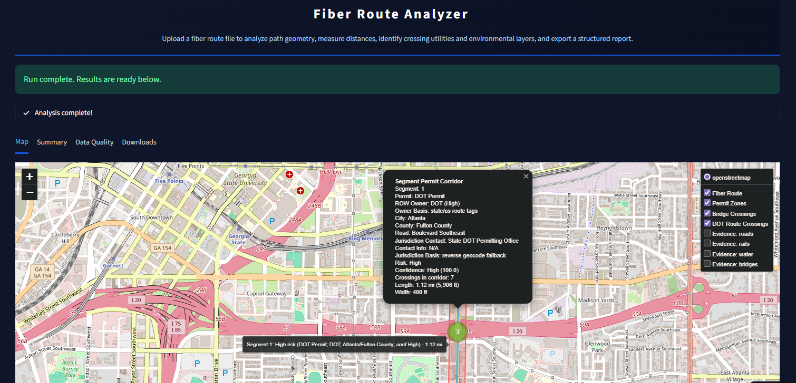

GIS · Permitting
Fiber Route Conflict Analyzer
Checks a fiber route against roads, rail, water, bridges, pipelines and parcels from live FeatureServer layers, classifies every crossing by permit risk, and writes permit corridors and exports.
PythonGeoPandasShapelyFeatureServer
Read the case study →